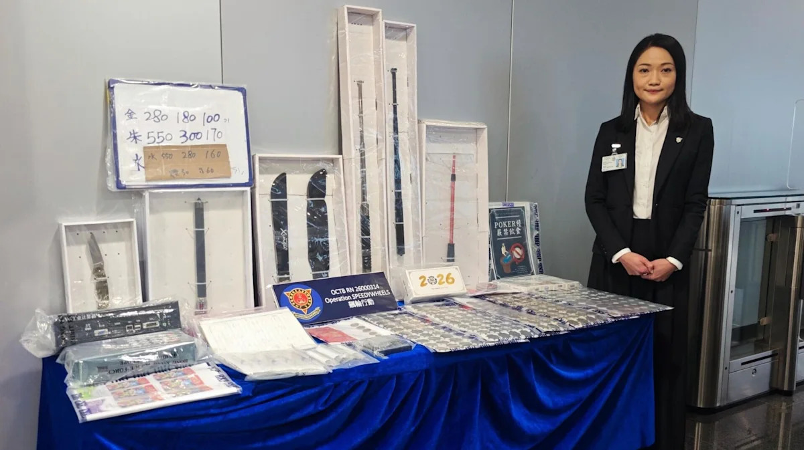
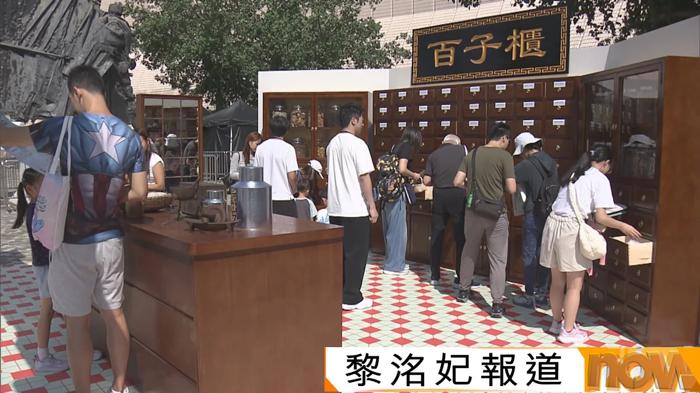
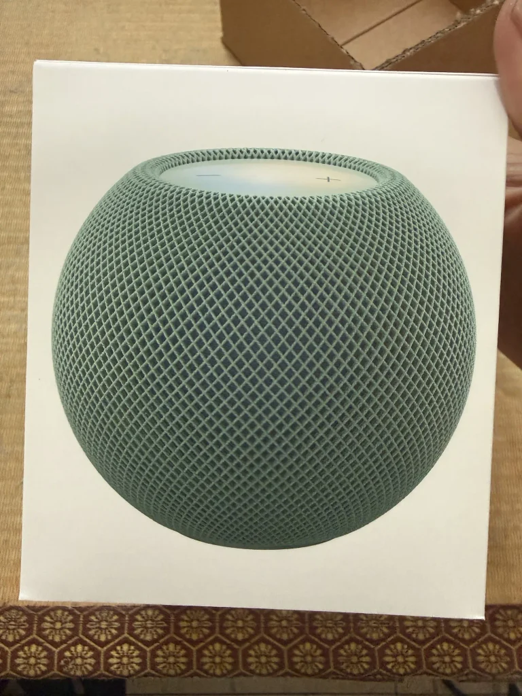
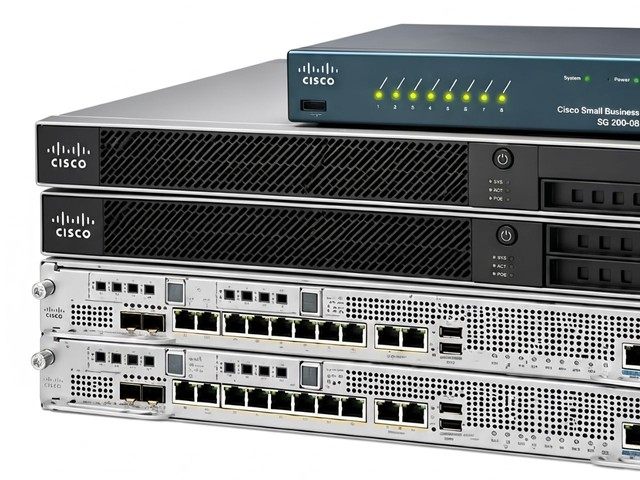

萬聖節狂歡過後全城回復平靜，宏福苑報告跟進與樓宇維修改革繼續成為本地焦點；市場方面，港股10月最後一個交易日反彈但全月仍累跌，科技股則在AI估值疑慮下急挫，成為全球市場主調。
萬聖節正日兼周末，全港多區氣氛熱鬧，蘭桂坊實施人流管制；凌晨時分大批內地旅客經跨境巴士及口岸北上，太子及旺角站頭各有近300人排隊，整體秩序井然。
蘭桂坊一帶嘩鬼通宵狂歡，警方一度實施人流管制，由中環站前往蘭桂坊曾需等候約180分鐘；清晨視察所見，雲咸街一帶遍布飲品包裝及垃圾袋，工人正清理水馬。
保安局局長鄧炳強承認宏福苑火災事件中消防處有不足之處，相信公務員敍用委員會將調查消防處高層，但強調處方有承擔，事後已作出多項改善。
宏福苑至今約95%業主已與政府簽署買賣業權合約；財政司副司長黃偉綸表示，很大機會明年立法收回餘下業權，但現時仍會給予時間讓業主簽約。
民政及青年事務局局長麥美娟就宏福苑火災問題向受影響居民及社會道歉，並表示會聽取社會各界及獨立委員會意見，做好修訂《建築物管理條例》的工作。
鄉議局成立100周年，首次舉行北部都會區馬拉松，全馬挑戰組清晨6時半在沙田石門起跑，途經沙田、大埔及林村河，最後於首次開放予跑步賽事使用的粉嶺繞道衝線；鄉議局主席劉業強期望日後每年舉辦，路線延伸至深圳。
財政司司長陳茂波表示，全年經濟增長預測料為3.5%至4.5%，有可能進一步上調，今年增長或是過去5年來最強勁；至於財政預算案會否「派糖」，要看數據。
考評局兩項國際考試的資料外洩，涉及約16900名內地居住人士；事件延續連日來多宗機構資料外洩事故，令資料保安再受關注。

📰有組織罪案及三合會調查科派喬裝人員滲透兩個主要三合會社團，揭發集團誘使青少年「搵快錢」，操控他們參與刑事恐嚇、淋紅油、洗黑錢甚至販毒；行動共拘捕49男9女，年齡介乎14至73歲。
一名有長期病患的七歲女童感染甲型流感，併發敗血性休克，目前情況危殆；女童於潛伏期內沒有外遊，亦未接種季節性流感疫苗，家長宜留意子女接種安排。
一輛B11線九巴駛至新皇崗口岸時，懷疑車長不熟路，誤闖限高3.9米的跨境旅遊巴通道撞頂；今次是九巴月內第二次同類事故，運輸署已要求九巴加強車長培訓。

📰為期一個月的香港博物館節開鑼，香港文化中心一連兩日舉辦嘉年華，設有港式茶檔、巨型蛋撻及傳統中藥舖等懷舊裝置，另有工作坊及表演，免費入場。
萬聖節金多寶頭獎無人中，下周四攪珠的獎金將累積至高達1億800萬元，投注人士宜量力而為。
港股10月最後一個交易日逆市升逾1%，恒指收報23294點，升335點，大市成交2143億元；但全月計恒指仍累跌5.36%或1318點，連跌第三個月，北水連續第13日流出，創最長連續流出紀錄，本月累計流出約279.5億元。
AI概念熱度降溫及融資成本上升拖累市場：恒生指數10月累跌6.7%，創6月以來最大單月跌幅；美股10月30日全線下跌，納指跌近3%，費城半導體指數跌超7%，英特爾重挫逾28%。
Intel股價單日暴瀉約三成，有望創數十年來最差單日表現；記憶體漲價與個人電腦需求放緩夾擊，成為半導體板塊急挫的導火線之一。
微軟發債250億美元支持人工智能基建，明年資本開支目標達1700億美元；AI基建投入規模持續擴大，亦令市場更關注回報何時兌現。
全球手機出貨量於2026年第三季按年跌20%，創2013年以來同季新低；記憶體漲價及換機周期拉長，令手機產業鏈承受更大壓力。
香港電訊同意退出美國市場，2027年9月前停止當地電訊服務；事件源於美方擬禁止中資電訊商取得美國電話號碼的安排，相關在美業務須有序結束。
Binance表示，已完成約90%受影響資產回填，並公布儲備金證明快照；事件源於早前疑遭大規模黑客攻擊，平台稱將承擔所有損失。
長鑫科技第三季營收1187.14億元，基於4F²架構的第六代技術平台DRAM完成工程樣片驗證；國產記憶體產能推進，成為記憶體漲價周期中的另一看點。
長城汽車發布2026年第三季度財報，營收達577.67億元；內地車企第三季業績陸續公布，市場關注新能源滲透率上升下的盈利表現。
Anthropic在其IPO文件中承諾，隨着基建加速擴張，未來將透過伺服器、建築及電力等義務支出近9000億美元；AI基建的長期財務承擔規模，再次引起市場討論。
傳統股災月，港股下跌1300點收場，尾股、債券、黃金全線下挫；商品組合本月收報269.30元，較上月大跌6.94%，但仍保持第一位，沉船基金則跌1.90%，每單位收報253.40元。
納斯達克指數單日跌747.73點或2.86%，相對年初至今仍升9.44%，定性為股災未免牽強，或許只是較大調整；但深一層看，英偉達單日跌4.22%、Intel跌28.5%、台積電跌5.94%，AI及其相關建設投資規模已到天文數字級別。
2026年10月底全球科技股遭遇猛烈拋售，納指10月30日單日重挫約2.86%，創6月初以來最大單日跌幅，距離10月6日歷史高點已回落約7.8%，逼近技術性修正門檻；標普500跌約1.82%，道指跌約1.09%，科技股市值短時間內蒸發逾1兆美元。
開源工具「nv-uefi-unlocker」登場，以Rust編寫的UEFI預驅動程式，在系統載入NVIDIA官方驅動前於UEFI DXE階段繞過韌體限制，令舊代GeForce顯示卡的AI算力得以完全釋放，實測更方便。

📱實測顯示，第一代與第二代HomePod mini可以加入同一個Apple家庭，並透過AirPlay 2同步播放音樂，擴大覆蓋範圍；不過兩代產品之間仍有一項重要限制，組成立體聲組合前宜先了解。
微軟資深工程師解釋，Windows 11任務管理器卡頓並非單純程式問題：當CPU佔用率接近100%時，任務管理器本身也要爭奪CPU時間片，因而出現介面刷新遲緩或短暫凍結。
適逢萬聖節假期，有民眾目擊Tesla全自動駕駛的士Cybercab以無人駕駛模式穿梭市區，車內乘客座上竟端坐着兩具繫着安全帶的骷髏骨架道具，詭譎又吸睛的畫面隨即在社交平台引發熱議。
Apple Intelligence將於11月4日起在中國大陸開放測試，12月隨iOS 27.3正式推出，Siri接入阿里巴巴千問；遲到兩年半的「靴子」終於落地，成為中國用戶最受關注的Apple AI進展。
WhatsApp新增四項群組功能，涵蓋提及篩選與永久置頂等，令大型群組的訊息管理更方便；功能正陸續推送，用戶可留意更新。
Samsung再出廣告嘲諷iPhone Duo，拿螢幕破裂說事，並提醒自己已做了八代摺疊機，呼籲用戶轉會；兩大陣營的摺疊機口水戰繼續升溫。
iPad mini 8電池容量曝光為4,900 mAh，較前代略低；更薄更輕的機身設計背後，續航與輕薄之間的取捨成為關注點。
Synology證實PHP2Shell漏洞波及十個套件，連已終止支援的DSM 6.2都有更新；早前C3RB3R勒索攻擊持續，官方提醒用戶盡快升至最新DSM。
Android曝出「死亡短訊」漏洞，毋須點擊也可令手機失去通訊能力；漏洞影響範圍及修補進度值得Android用戶留意，宜盡快更新系統。
vivo X500 Pro Max實測：長焦鏡頭散景表現達單反級，安兔兔跑分突破400萬；影像與效能兼備，成為近期受關注的準旗艦之一。
OnePlus Ace 7系列發布，內置散熱風扇及185Hz螢幕，Pro版配備9,000mAh大電池；散熱與續航成為今代主打賣點。
OpenAI宣布，12月起ChatGPT將與Codex共享使用額度；訂閱用戶的額度計算方式改變，開發者及重度用戶宜留意新安排對日常使用的影響。
OpenAI將本輪融資目標下調100億美元，擬募資約200億美元；融資規模調整之際，市場對AI公司的估值與回報預期亦同步降溫。
Anthropic公開Claude的後台自審舉報機制，該機制已靜默運行四個月；模型在特定情況下會觸發內部審查流程，成為AI安全治理的新討論點。
DeepSeek發布全新Agent架構，進一步提升模型自主執行多步驟任務的能力；國產大模型在Agent方向的競爭持續加劇。
英偉達披露下一代共封裝光學（CPO）技術，原型樣品已就位；光互連被視為下一代AI算力基建的關鍵，相關供應鏈值得留意。
蘋果再度反超英偉達，成為全球市值最高公司；iPhone需求推動市值回升，中國市場增長抵銷美日跌幅，成為市值榜首易手的推手。
OpenAI行政總裁奧爾特曼會見三星高管，商討深化AI及儲存晶片領域合作；記憶體漲價周期下，AI公司與晶片供應商的結盟愈來愈受關注。

🤖Cisco決定以「無限Token」策略，在24個月內用AI重寫98%舊程式；企業級AI重構舊系統的規模與速度，成為軟件行業的新標誌。
長鑫科技基於4F²架構的第六代技術平台DRAM完成工程樣片驗證；國產DRAM技術節點再進一步，記憶體供應格局或逐步改變。
TCL華星t8項目設備正式搬入，全球首條印刷OLED G8.6代產線進入設備安裝期；印刷OLED量產進程加快，或改寫大尺寸面板成本結構。
西湖大學成立世界模型研究中心，聚焦世界模型的基礎研究；世界模型被視為通向更通用人工智能的關鍵方向之一，學界投入持續增加。
區塊鏈分析公司Chainalysis遭網絡攻擊，部分客戶姓名及電郵被訪問；事件提醒企業，連安全公司本身亦可能成為攻擊目標。